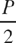
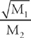
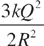
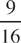

1. For an object traveling in a straight line, its velocity (v, in m/s) as a function of time (t, in s) is given by the following graph.
Which graph best depicts the object’s momentum?
A. B. C. D. E.
2. For an object traveling in a straight line, its velocity (v, in m/s) as a function of time (t, in s) is given by the following graph.
Which graph best illustrates the object’s acceleration?
3. For an object traveling in a straight line, its velocity (v, in m/s) as a function of time (t, in s) is given by the following graph.
Which graph best depicts the object’s kinetic energy?
4. For an object traveling in a straight line, its velocity (v, in m/s) as a function of time (t, in s) is given by the following graph.
Which graph best illustrates the object’s distance from its starting point?
5. Which one is NOT a vector?
A. DisplacementB. VelocityC. AccelerationD. Linear momentum E. Kinetic energy
A. Displacement B. Velocity C. Acceleration D. Linear momentum E. Kinetic energy
7. Which quantity can be expressed in the same units as impulse?
8. If an object’s speed is changing, which of the quantities could remain constant?
A. DisplacementB. Velocity C. Acceleration D. Linear momentum E. Kinetic energy
9. Which provides the basis for the observation that the universe is expanding?
A. Newton’s law of universal gravitationB. Red shift of light from other galaxies C. The fact that every element of atomic number greater than 83 is radioactiveD. The zeroth law of thermodynamics E. Mass–energy equivalence
10. Which principle could be used to help calculate the amount of radiation emitted by a star?
A. Newton’s law of universal gravitationB. Red shift of light from other galaxies C. The fact that every element of atomic number greater than 83 is radioactive D. The zeroth law of thermodynamics E. Mass–energy equivalence
11. Which is due to the change in wave speed when a wave strikes the boundary to another medium?
A. Reflection B. Refraction C. PolarizationD. Diffraction E. Interference
12. Which phenomenon is NOT experienced by sound waves?
13. An astronaut standing on the surface of the moon (mass = M, radius = R) holds a feather (mass = m) in one hand and a hammer (mass = 100m) in the other hand, both at the same height above the surface. If he releases them simultaneously, what is the acceleration of the hammer?
14.
Two satellites orbit the earth. Their orbits are circular, and each satellite travels at a constant speed. If the mass of Satellite #2 is twice the mass of Satellite #1, which satellite’s speed is greater?
A. Satellite #1, by a factor of B. Satellite #1, by a factor of 2C. Satellite #2, by a factor of D. Satellite #2, by a factor of 2E. Neither; the satellites’ speeds are the same.
15. It refers to the collision of two blocks on a frictionless table. Before the collision, the block of mass m is at rest.
What is the total momentum of the blocks just AFTER the collision?
A. 12 kg-m/sB. 16 kg-m/sC. 18 kg-m/sD. 24 kg-m/sE. 32 kg-m/s
16. It refers to the collision of two blocks on a frictionless table. Before the collision, the block of mass m is at rest.
If the collision were elastic, what is the total kinetic energy of the blocks just AFTER the collision?
A. 16 JB. 32 JC. 64 JD. 128 J E. 256 J
17. It refers to the collision of two blocks on a frictionless table. Before the collision, the block of mass m is at rest.
If the blocks had instead stuck together after the collision, with what speed would they move if m = 12 kg ?
A. 2.0 m/sB. 2.7 m/sC. 3.2 m/sD. 4.0 m/sE. 4.6 m/s
18.
The figure above shows two positively charged particles. The +Q charge is fixed in position, and the +q charge is brought close to +Q and released from rest. Which of the following graphs best depicts the acceleration (a) of the +q charge as a function of its distance (r) from +Q ?
19. Two particles have unequal charges; one is +q and the other is –2q. The strength of the electrostatic force between these two stationary particles is equal to F. What happens to F if the distance between the particles is halved?
A. It decreases by a factor of 4.B. It decreases by a factor of 2.C. It remains the same.D. It increases by a factor of 2.E. It increases by a factor of 4.
20. A simple harmonic oscillator has a frequency of 2.5 Hz and an amplitude of 0.05 m. What is the period of the oscillations?
A. 0.4 secB. 0.2 secC. 8 secD. 20 secE. 50 sec
21. A light wave, traveling at 3 × 108 m/s has a frequency of 6 × 1015 Hz. What is its wavelength?
A. 5 × 10–8 mB. 2 × 10–7 mC. 5 × 10–7 mD. 5 × 10–6 mE. 2 × 107 m
22. A beam of monochromatic light entering a glass window pane from the air will experience a change in
A. frequency and wavelengthB. frequency and speedC. speed and wavelengthD. speed onlyE. wavelength only
23.
Two cannons shoot cannonballs simultaneously. The cannon embedded in the ground shoots a cannonball whose mass is half that of the cannonball shot by the elevated cannon. Also, the initial speed of the cannonball projected from ground level is half the initial speed of the cannonball shot horizontally from the elevated position. Air resistance is negligible and can be ignored. Each cannonball is in motion for more than 2 seconds before striking the level ground.
Let a1 denote the acceleration of the cannonball of mass m one second after launch, and let a2 denote the acceleration of the cannonball of mass m/2 one second after launch. Which of the following statements is true?
A.
(A)a1= 4a2B.
(B)a1= 2a2C.
(C)a1= a2D.
(D)a2= 2a1E.
(E)a2= 4a1
24.
If the cannonball projected from ground level is in flight for a total time of T, what horizontal distance does it travel?
A. B. v0TC. D. E. v0Tcosθ0
25.
For the cannonball of mass m, which of the following quantities decreases as the cannonball falls to the ground?
A. Kinetic energyB. Potential energyC. MomentumD. SpeedE. Mass
26. Which of the following statements is true concerning phase changes?
A. When a liquid freezes, it releases thermal energy into its immediate environment.B. When a solid melts, it releases thermal energy into its immediate environment.C. For most substances, the latent heat of fusion is greater than the latent heat of vaporization.D. As a solid melts, its temperature increases.E. As a liquid freezes, its temperature decreases.
27. Four point charges are labeled Charge 1, Charge 2, Charge 3, and Charge 4. It is known that Charge 1 attracts Charge 2, Charge 2 repels Charge 3, and Charge 3 attracts Charge 4. Which of the following must be true?
A. Charge 1 attracts Charge 4.B. Charge 2 attracts Charge 3.C. Charge 1 repels Charge 3.D. Charge 2 repels Charge 4.E. Charge 1 repels Charge 4.
28.
All six resistors in the circuit have the same resistance, R, and the battery is a source of constant voltage, V.
How does the current through Resistor a compare with the current through Resistor b ?
A. The current through Resistor a is 9 times the current through Resistor b.B. The current through Resistor a is 3 times the current through Resistor b.C. The current through Resistor a is the same as the current through Resistor b.D. The current through Resistor b is 3 times the current through Resistor a.E. The current through Resistor b is 9 times the current through Resistor a.
29.
If the total resistance in the circuit is , the amount of current that passes through resistor a is what constant times ?
30.
If the power dissipated by resistor e is P, how much power is dissipated by resistor f ?
A. B. C. D. PE. 2P
31. An object of mass 5 kg is acted upon by exactly four forces, each of magnitude 10 N. Which of the following could NOT be the resulting acceleration of the object?
A. 0 m/s2B. 2 m/s2C. 4 m/s2D. 8 m/s2E. 10 m/s2
32.
The total force acting on an object as a function of time is given in the graph above. What is the magnitude of the change in momentum of the object between t = 0 and t = 0.4 sec?
A. 2 kg-m/secB. 5 kg-m/secC. 10 kg-m/secD. 12 kg-m/secE. 15 kg-m/sec
33. An object is placed 20 cm from a diverging lens. If the distance between the lens and the image is 8 cm, what is the magnification?
A. B. C. D. 2E.
34. A rope stretched between two fixed points can support transverse standing waves. What is the ratio of the sixth harmonic frequency to the third harmonic frequency?
A. B. C. 2D. 2E. 4
35. In which of the following situations involving a source of sound and a detector of the sound is it possible that there is NO perceived Doppler shift?
A. The source travels toward the stationary detector.B. The detector travels toward the stationary source.C. Both the source and the detector travel in the same direction.D. Both the source and detector travel in opposite directions, with the source and detector moving away from each other.E. Both the source and detector travel in opposite directions, with the source and detector moving toward each other.
36. Sound waves travel at 350 m/s through warm air and at 3,500 m/s through brass. What happens to the wavelength of a 700 Hz acoustic wave as it enters brass from warm air?
A. It decreases by a factor of 20.B. It decreases by a factor of 10.C. It increases by a factor of 10.D. It increases by a factor of 20.E. The wavelength remains unchanged when a wave passes into a new medium.
37. Which of the following types of electromagnetic radiation has the longest wavelength?
A. Gamma raysB. UltravioletC. Blue lightD. X-raysE. Orange light
38.
The circular metal plate has a concentric circular hole. If the plate is heated uniformly, so that the outer circumference of the plate increases by 4 percent, then the circumference of the hole will
A. decrease by 16 percentB. decrease by 8 percentC. decrease by 4 percentD. increase by 4 percentE. increase by 8 percent
39. A box of mass 40 kg is pushed in a straight line across a horizontal floor by an 80 N force. If the force of kinetic friction acting on the box has a magnitude of 60 N, what is the acceleration of the box?
A. 0.25 m/s2B. 0.5 m/s2C. 1.0 m/s2D. 2.0 m/s2E. 3.5 m/s2
40. The table records the mass and speed of an object traveling at constant velocity on a frictionless track, as performed by a student conducting a physics lab exercise. In her analysis, the student had to state the trial in which the object had the greatest momentum and the trial in which it had the greatest kinetic energy. Which of the following gives the correct answer?
Greatest Momentum Greatest Kinetic Energy
A. Trial 1 Trial 3B. Trial 2 Trial 2C. Trial 3 Trial 2D. Trial 3 Trial 3E. Trial 4 Trial 4
41. What did Rutherford’s experiments on alpha particle scattering indicate about the structure of the atom?
A. Atoms are roughly spherical with a radius of about 10–10 m.B. The electrons occupy quantized energy levels, absorbing or emitting energy only when they make a quantum jump between these levels.C. The density of positive charge within an atom is not uniform throughout the atom’s volume.D. Allowed electron orbits must have a circumference equal to a whole number times the electron’s de Broglie wavelength.E. Alpha particles are positively charged.
42. What happens to the pressure, P, of an ideal gas if the temperature is increased by a factor of 2 and the volume is increased by a factor of 8 ?
A. P decreases by a factor of 16.B. P decreases by a factor of 4.C. P decreases by a factor of 2.D. P increases by a factor of 4.E. P increases by a factor of 16.
43. How much current does a 60-watt lightbulb draw if it operates at a voltage of 120 volts?
A. 0.25 ampB. 0.5 ampC. 2 ampsD. 4 ampsE. 30 amps
44.
Identify the particle X resulting from the nuclear reaction shown above.
A. PositronB. ElectronC. ProtonD. NeutronE. Alpha particle
45. If a 50 g block of solid marble (specific heat = 0.9 kJ/kg•°C), originally at 20°C, absorbs 100 J of heat, which one of the following best approximates the temperature increase of the marble block?
A. 1°CB. 2°CC. 4°CD. 10°CE. 20°C
46. A sample of an ideal gas is heated, doubling its absolute temperature. Which of the following statements best describes the result of heating the gas?
A. The root-mean-square speed of the gas molecules doubles.B. The average kinetic energy of the gas molecules increases by a factor of .C. The average kinetic energy of the gas molecules increases by a factor of 4.D. The speeds of the gas molecules cover a wide range, but the root-mean-square speed increases by a factor of .E. The speeds of the gas molecules cover a wide range, but the root-mean-square speed increases by a factor of 2.
47. A block of ice, initially at –20°C, is heated at a steady rate until the temperature of the sample reaches 120°C. Which of the following graphs best illustrates the temperature of the sample as a function of time?
48. Which of the following changes to a double-slit interference experiment with light would increase the widths of the fringes in the diffraction pattern that appears on the screen?
A. Use light of a shorter wavelengthB. Move the screen closer to the slitsC. Move the slits closer togetherD. Use light with a lower wave speedE. Increase the intensity of the light
49. In an experiment designed to study the photoelectric effect, it is observed that low-intensity visible light of wavelength 550 nm produced no photoelectrons. Which of the following best describes what would occur if the intensity of this light were increased dramatically?
A. Almost immediately, photoelectrons would be produced with a kinetic energy equal to the energy of the incident photons.B. Almost immediately, photoelectrons would be produced with a kinetic energy equal to the energy of the incident photons minus the work function of the metal.C. After several seconds, necessary for the electrons to absorb sufficient energy from the incident energy, photoelectrons would be produced with a kinetic energy equal to the energy of the incident photons.D. After several seconds, necessary for the electrons to absorb sufficient energy from the incident energy, photoelectrons would be produced with a kinetic energy equal to the energy of the incident photons minus the work function of the metal.E. Nothing would happen.
50.
The diagram (not drawn to scale) gives the first few electron energy levels within a single-electron atom. Which of the following gives the energy of a photon that could NOT be emitted by this atom during an electron transition?
A. 17 eVB. 42 eVC. 64 eVD. 255 eVE. 302 eV
51.
The figure above shows a pair of long, straight current-carrying wires and four marked points. At which of these points is the net magnetic field zero?
A. Point 1 onlyB. Points 1 and 2 onlyC. Point 2 onlyD. Points 3 and 4 onlyE. Point 3 only
52. A nonconducting sphere is given a nonzero net electric charge, +Q, and then brought close to a neutral conducting sphere of the same radius. Which of the following will be true?
A. An electric field will be induced within the conducting sphere.B. The conducting sphere will develop a net electric charge of –Q.C. The spheres will experience an electrostatic attraction.D. The spheres will experience an electrostatic repulsion.E. The spheres will experience no electrostatic interaction.
53. Which of the following would increase the capacitance of a parallel-plate capacitor?
A. Using smaller platesB. Replacing the dielectric material between the plates with one that has a smaller dielectric constantC. Decreasing the voltage between the platesD. Increasing the voltage between the platesE. Moving the plates closer together
54.
The four wires are each made of aluminum. Which wire will have the greatest resistance?
A. Wire AB. Wire BC. Wire CD. Wire DE. All the wires have the same resistance because they’re all composed of the same material.
55.
What is the amplitude of the wave?
A. 0.08 m B. 0.16 mC. 0.32 mD. 0.48 mE. 0.60 m
56.
What is the wavelength of the wave?
A. 0.08 mB. 0.16 mC. 0.20 mD. 0.40 mE. 0.60 m
57.
The drawing shows the displacement of a traveling wave at time t = 0. If the wave speed is 0.5 m/sec, and the wavelength is λ m, what is the period of the wave (in seconds)?
A. B. C. D. 2λE. 4λ
58. Lead-199 has a half-life of 1.5 hours. If a researcher begins with 2 grams of lead-199, how much will remain after 6 hours?
A. 0.125 gramsB. 0.25 gramsC. 0.375 gramsD. 0.5 gramsE. 0.625 grams
59. The square shown is the same size in each of the following diagrams. In which diagram is the electrical potential energy of the pair of charges the greatest?
60. Four point charges, two positive and two negative, are fixed in position at the corners of a square, as shown below.
Which one of the following arrows best illustrates the total electrostatic force on the charge in the lower right-hand corner of the square?
A. B. C. D. E. The electric force on this charge is 0.
61.
One end of a rigid, massless rod of length 50 cm is attached to the edge of the table at point O; at the other end of the rod is a ball of clay of mass m = 0.2 kg. The rod extends horizontally from the end of the table. What is the torque of the gravitational force on the clay ball relative to point O?
A. 0.01 N-mB. 0.1 N-mC. 1 N-mD. 10 N-mE. 100 N-m
62. Two rocks are dropped simultaneously from the top of a tall building. Rock 1 has mass M1, and rock 2 has mass M2. If air resistance is negligible, what is the ratio of rock 1’s momentum to rock 2’s momentum just before they hit the ground?
A. B. C. D. 1E. None of the above
63.
The four forces act on the block as it moves the distance L. What is the total work performed on the block by these forces?
A. (F + f)LB. (F − f)LC. (N − w)LD. (N + w)LE. (F − N + f − w)L
64.
A loop of metal wire containing a tiny lightbulb is attached to an insulating handle and placed over a coil of wire in which a current can be established by a source of emf and controlled by a variable resistor. The plane of the top loop is parallel to the plane of the bottom coil. Which of the following could NOT cause the bulb to light?
A. Rotating the handle 90° while keeping the plane of the top loop parallel to the plane of the bottom coilB. Raising the handle up and away from the coilC. Lowering the handle down toward the coilD. Decreasing the resistance of the coilE. Increasing the resistance of the coil
65. During each cycle, a heat engine with an efficiency of 25% takes in 800 J of energy. How much waste heat is expelled during each cycle?
A. 100 JB. 200 JC. 300 JD. 400 JE. 600 J
66.
Three point charges are arranged along a straight line. If k denotes Coulomb’s constant, what is the strength of the electrostatic force felt by the positive charge at the left end of the line?
A. B. C. D. E. 
67. Consider two adjacent transparent media. The speed of light in Medium 1 is v1, and the speed of light in Medium 2 is v2. If v1 < v2, then total internal reflection will occur at the interface between these media if a beam of light is
A. incident in Medium 1 and strikes the interface at an angle of incidence greater than sin–1(v1/v2).B. incident in Medium 1 and strikes the interface at an angle of incidence greater than sin–1(v2/v1).C. incident in Medium 2 and strikes the interface at an angle of incidence greater than sin–1(v1/v2).D. incident in Medium 2 and strikes the interface at an angle of incidence greater than sin–1(v2/v1).E. Total internal reflection is impossible in the situation described.
68.
A block is attached to the end of a linear spring, the other end of which is anchored to a wall. The block is oscillating between extreme positions X and Y on a frictionless table, and when the block is at Point O, the spring is at its natural length. The value of the spring’s force constant, k, is known, but the mass of the block, m, is unknown.
Knowing which one of the following would permit you to calculate the value of m ?
A. The acceleration of the block at Point OB. The acceleration of the block at Point YC. The speed of the block as it passes through OD. The distance between X and YE. The time required for the block to travel from X to Y
69.
If ω = , and the distance between O and Y is d, what is the speed of the block at point O ?
A. B. dωC. 2dωD. d2ωE. dω2
70. A particle travels in a circular path of radius 0.2 m with a constant kinetic energy of 4 J. What is the net force on this particle?
A. 4 NB. 16 NC. 20 ND. 40 NE. Cannot be determined from the information given
71.
How much work is done by the electric field created by the stationary charge +Q = +2.0 C to move a charge of +1.0 × 10–9 C from position X to position Z ? (Note: The value of Coulomb’s constant, k, is 9 × 109 N-m2/C2.)
A. 0 JB. 150 JC. 300 JD. 560 JE. 1,000 J
72.
If EY is the electric field strength at position Y and EZ is the electric field strength at position Z, what is the value of ?
A. B. C. D. E.
73. An object is placed 100 cm from a plane mirror. How far is the image from the object?
A. 50 cmB. 100 cmC. 200 cmD. 300 cmE. 400 cm
74. Why do baseball catchers wear mitts rather than just using their bare hands to catch pitched baseballs?
A. The impulse delivered to the catcher’s hand is reduced due to the presence of the mitt.B. The force on the catcher’s hand is reduced because of the increased area provided by the mitt.C. The baseball’s change in momentum is reduced due to the presence of the mitt.D. The force on the catcher’s hand is reduced because the mitt increases the time of impact.E. The force on the catcher’s hand is reduced because the mitt decreases the time of impact.
75. A spaceship is moving directly toward a planet at a speed of . When the spaceship is 4.5 × 108 m from the planet (as measured by someone on the spaceship), a pulse of light is emitted by someone on the planet. As measured by someone on the spaceship, how long does it take the light pulse to travel from the planet to the ship?
A. 0.5 secB. 1.0 secC. 1.5 secD. 2.0 secE. 2.5 sec